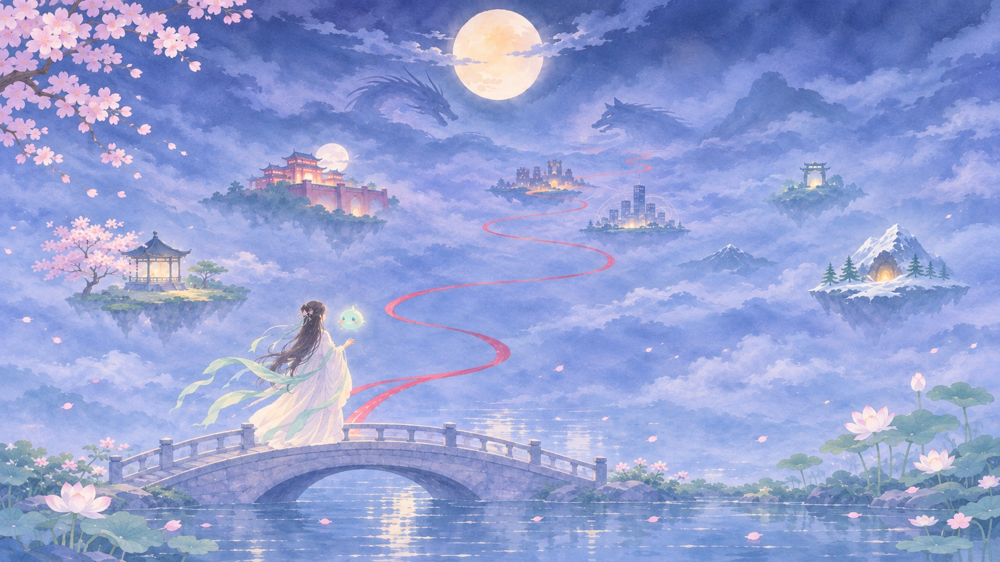
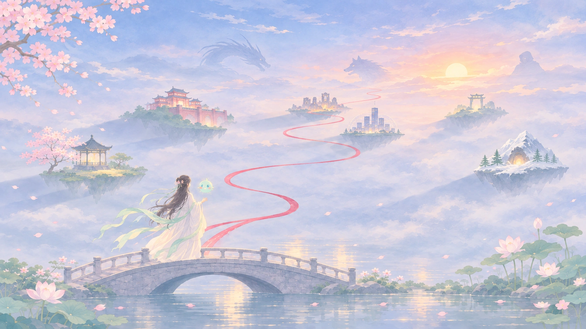

✦ Luân Hồi Nghịch Chuyển Ký ✦
Nghịch Mệnh · Độ Tâm
“Mỗi thế giới có một kẻ ác chờ được tha thứ. Bạn chỉ có vài ngày.”
Khí Linh
Tiểu Châu
Hệ thống đồng hành qua vạn giới“Chào mừng! Ta là Tiểu Châu, hệ thống duy nhất theo chân người qua biển khổ luân hồi. Ở mỗi thế giới, người là nữ chính nắm giữ tâm cơ của kiếp này, phải độ hóa kẻ ác trước khi số mệnh khép lại. Quyết định hoàn toàn là ở người.”
Trạng thái: Tĩnh tâmĐồng bộ linh thức 100%
Hành Trình Của Bạn
/ Karmic ArchiveChưa có thế giới nào hoàn thành. Kết quả tốt nhất ở mỗi thế giới sẽ được ghi lại tại đây.
Các Thế Giới Đang Có
Khám phá các vực giới luân hồi khả dụng